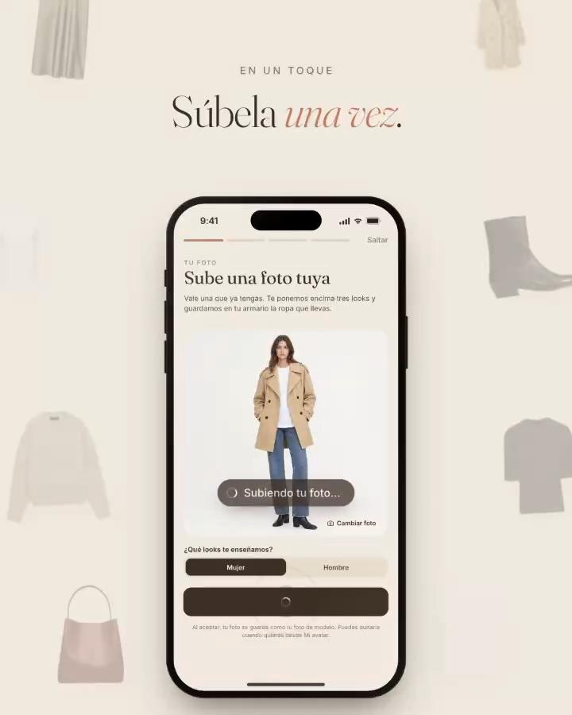
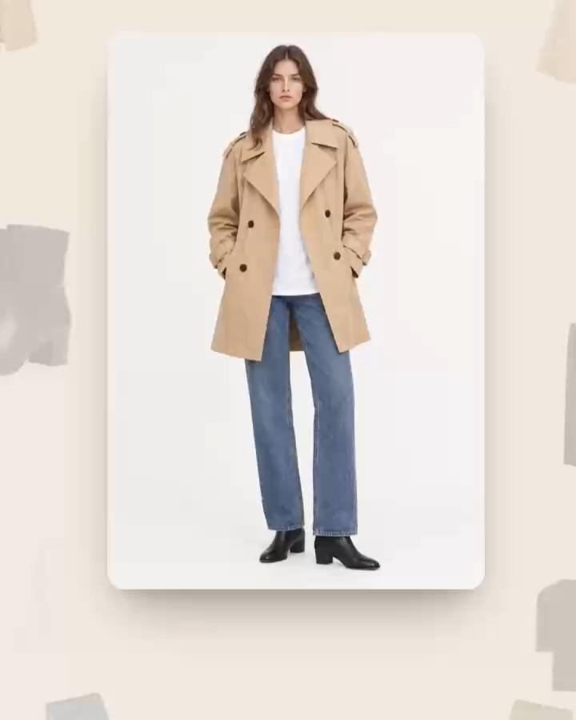
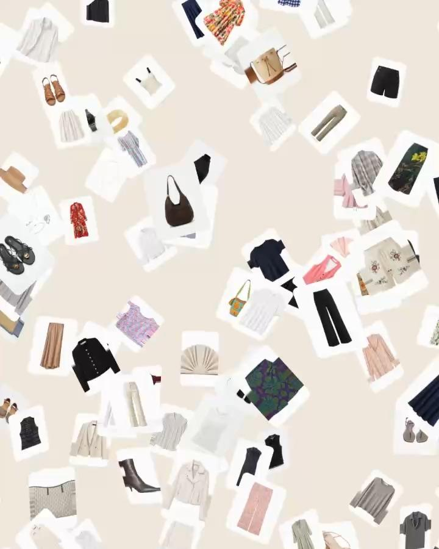
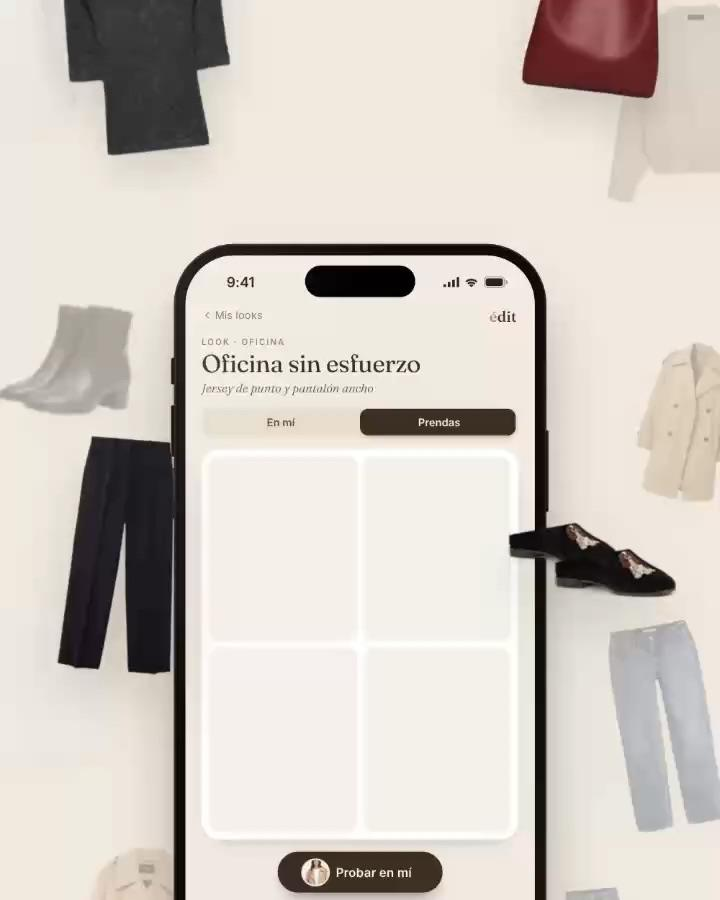
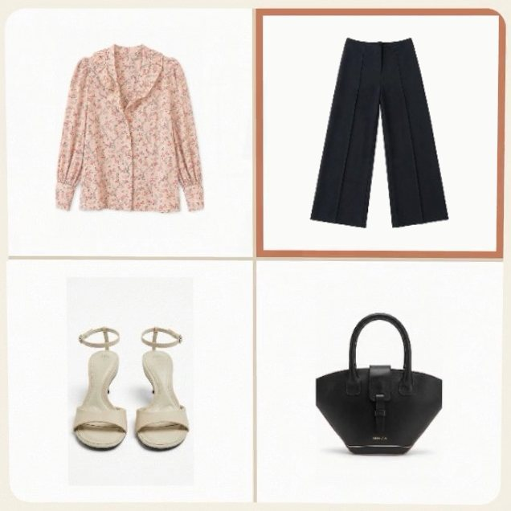
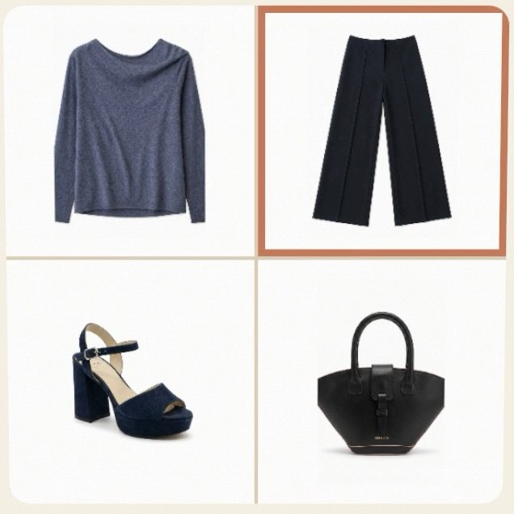
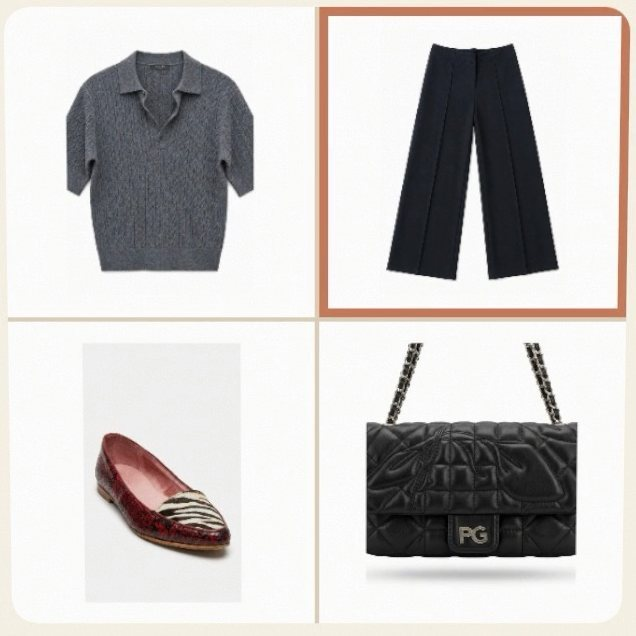
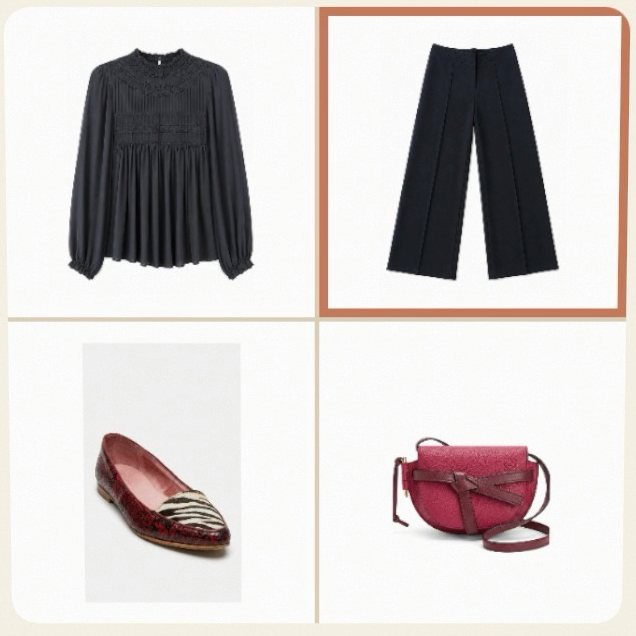
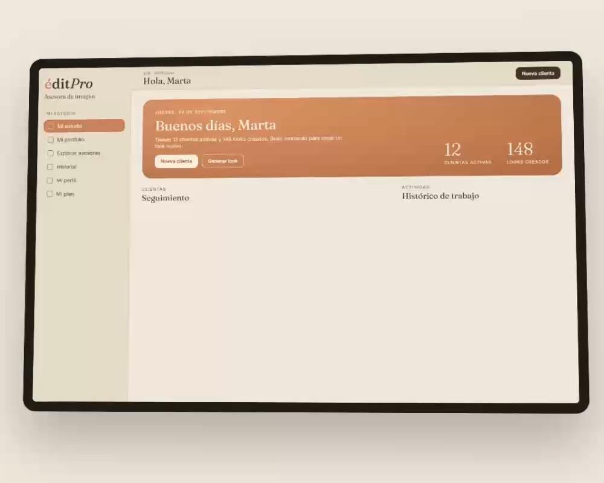

Un viaje, un evento, una temporada.
Organiza tus planes con los looks de cada día. Y al hacer la maleta, marca lo que ya llevas.

Sube una foto y édit te prueba looks hechos con tu propia ropa.

Vestirse mejor empieza por mirar distinto lo que ya tienes.
édit es una app de estilismo personal para iPhone y Android: digitaliza tu armario con fotos, crea looks con la ropa que ya tienes, te los prueba sobre una foto tuya y te conecta con una asesora de imagen.
Sube una foto tuya de cuerpo entero y édit saca las prendas que llevas. O fotografía tu ropa, prenda a prenda.

édit reconoce cada prenda, le quita el fondo y la ordena por tipo, color y temporada.

Tu probador virtual: elige un look de tu armario y míralo sobre una foto tuya, en un toque.

Sácale más a lo que ya tienes. édit te propone looks con tu propia ropa, y tú puedes crear tus propios outfits.






Tu armario no necesita estar lleno.
Necesita tener sentido.
Organiza tus planes con los looks de cada día. Y al hacer la maleta, marca lo que ya llevas.
Tu armario virtual en el móvil, ordenado y a mano.

Cuando quieras comprar, édit te ayuda a ver qué falta de verdad en tu armario.
Trabaja con una asesora de imagen profesional, sobre tu armario de verdad.
Explora asesoras de imagen, mira sus looks y quédate con la que encaja contigo.
Trabaja sobre la ropa que ya tienes.
Sus propuestas te llegan dentro de édit.
La tecnología no sustituye
el criterio. Lo amplifica.
No va de ropa. Va de vestirse con intención.
édit profesionales · en web y en app
Para asesoras de imagen, estilistas y personal shoppers. Tus clientas, sus armarios y tus looks, en un sitio.

Más clientas, mismo criterio.
Sin perder tu sello.
édit es una app de estilismo personal. Digitalizas tu armario, creas looks con la ropa que ya tienes y, si quieres, trabajas con una asesora de imagen. Todo en un mismo sitio, para vestirte con más intención y menos esfuerzo.
Haz una foto a cada prenda. édit la reconoce y la organiza por tipo, color y temporada, y tú revisas la ficha antes de guardarla. Con unas pocas prendas ya puedes empezar a combinar.
No. édit empieza por lo que ya tienes: te ayuda a redescubrir prendas olvidadas y a encontrar combinaciones nuevas. Y cuando quieras comprar, te ayuda a ver qué falta de verdad en tu armario.
édit te propone combinaciones con tus propias prendas, pensadas para tu semana, el clima y cómo quieres sentirte. También puedes montar tus looks, guardarlos y repetirlos cuando quieras.
Sí. Con los planes organizas un viaje, un evento o una temporada: eliges los looks de cada día y marcas lo que ya has metido en la maleta.
Puedes explorar asesoras de imagen profesionales, ver sus looks y elegir la que encaja contigo. Ella trabaja sobre tu armario real y te envía sus propuestas dentro de la app. La tecnología amplifica su criterio; no lo sustituye.
Es el estudio digital para asesoras de imagen, estilistas y personal shoppers. Reúne la ficha y el armario de cada clienta, los looks, las cápsulas y las propuestas, para trabajar de forma más visual y organizada.
Descargar édit es gratis. Algunas funciones forman parte de la suscripción Premium, que se contrata desde la propia app: allí verás el precio y las condiciones antes de confirmar.
édit está disponible para iPhone en el App Store y para Android en Google Play.
Guía práctica para pasar tu ropa al móvil sin agobios: por dónde empezar, cómo hacer las fotos y qué hacer con cada prenda para sacarle partido.
Un método sencillo para combinar lo que ya está en tu armario, guardar los looks que funcionan y dejar resuelto el de mañana sin comprar nada.
Deja de meter prendas sueltas. Planifica el viaje por días, decide los looks antes de salir y lleva solo lo que te vas a poner, sin «por si acaso».
Digitaliza tu armario, crea looks con la ropa que ya tienes y conecta con tu asesora de imagen.